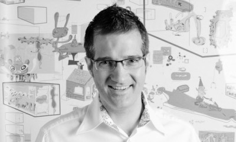
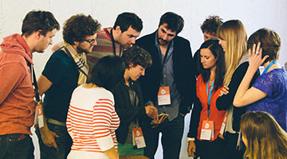
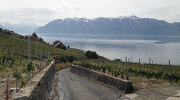
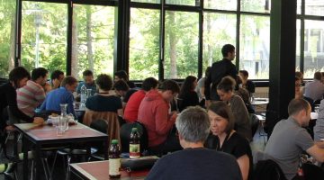

:ratio presents
UX Lausanne 2015
Creating delightful User Experiences
2 days - 8 talks - 8 workshops
June 4–5, 2015
@ Arsenic & Palais de Rumine - Lausanne, Switzerland
UX Lausanne is the first Western Switzerland event dedicated exclusively to User Experience Design & how to design delightful user experiences.
After a very successful first edition in 2014, the conference gathering major actors and specialists of the field, will be held every year in Lausanne.
Opportunity is given throughout a human-sized two days program (conference and workshops) to densify local and international connections, as well as sharing innovations and ideas in a delightful atmosphere.

Northumbria University
Newcastle upon Tyne, UK

BloomBoard
Dallas, USA
Jönköping International Business School
Jönköping, Sweden
Quality interactions

Attending UX Lausanne is an excellent opportunity to meet fascinating, like-minded people and learn not only from the speakers but also from the other attendees.
Nice surroundings

Lausanne is a small, quirky and vibrant city, hosting a wide range of cultural activities. If you are visiting from abroad, you might want to spend a couple of days visiting the Unesco-classed vineyards, the Chillon Castle, as well as a quick hike in the nearby mountains, or a trip to Gruyères, its Castle, and renowned HR Giger museum.
Good food

Local, tasty and fresh, this is how we imagine the meals for our attendees. Every detail has been forethought so that you enjoy the most delightful moment with us and our goal is also to surprise you every day of the program.
1
Improve and develop your skills, attending human-sized workshops, blending together creativity and pragmatism. Get a chance to turn theory into practice and to ask questions about your own projects and endeavours.
2
Share moments and ideas with the UX community, as well as connecting and amplifying your network and its impact. Meet innovators and people sharing your interests from all across Switzerland and Europe, discuss your projects and get a whiff of the new trends.
3
Learn from the best and take a dip in the creative world. Benefit from emulation and collective learning, working with set purposes and increasing your scope on Design, Interaction and User Experience.
Newsletter
No need to stay up to date anymore. So no more newsletter.
Presented by :ratio
We are a Swiss user experience agency. Our team of seven specialists design elegant and intuitive digital products.